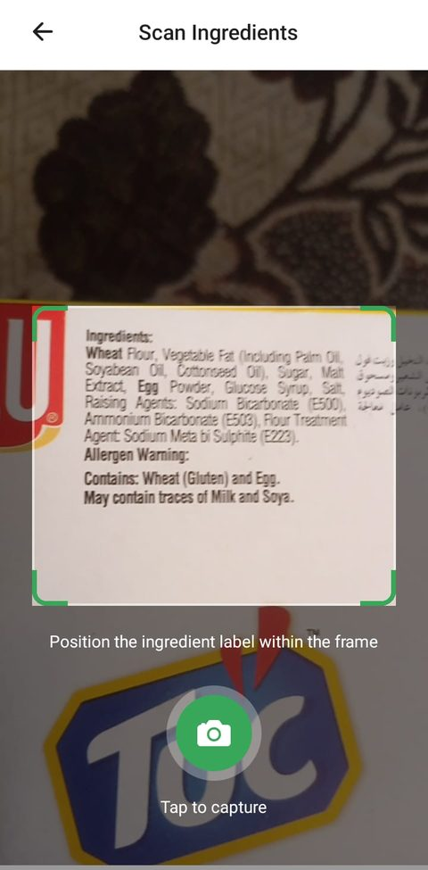
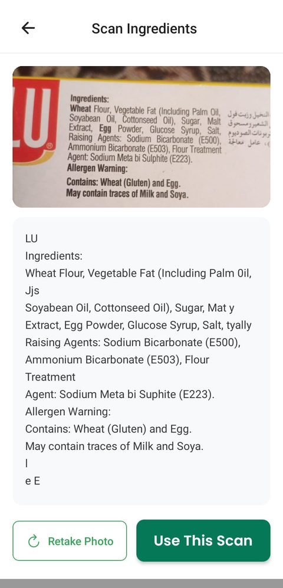
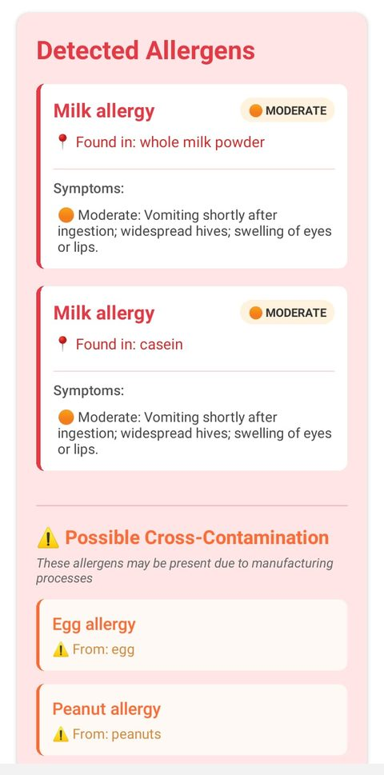
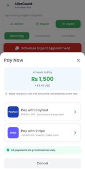
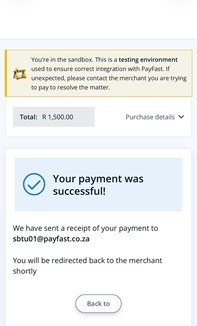
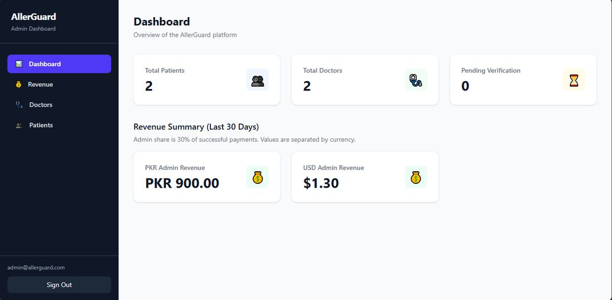
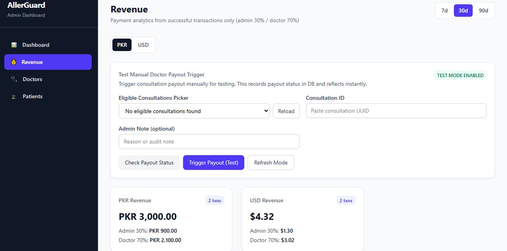

AllerGuard
A mobile app that reads ingredient labels with OCR, checks them against a personal allergy profile, and flags allergens, derivatives, and cross-contamination risks. Users can also book paid consultations with verified doctors.
What I built
- A Node.js/Express payment service that uses the Strategy pattern to route between Stripe and PayFast, with webhook handling, session confirmation, and PKR to USD conversion.
- An allergen prediction pipeline that pairs a custom NLP parser with the Google Gemini API, including API key rotation for rate limits and a fuzzy-matching fallback for offline use.
- An offline-first data layer with SQLite caching and background sync to Supabase.
- The React Native (Expo) scan flow: camera capture, an adjustable bounding-box frame to crop the label region, and on-device text recognition with Google ML Kit.
- The React/TypeScript admin dashboard: revenue analytics split by currency, doctor verification views, and patient profile management.
- React Native
- Expo
- TypeScript
- Node.js
- Express
- Supabase
- PostgreSQL
- Stripe
- PayFast
- Gemini API
- ML Kit
The scan flow



Payments


The admin dashboard

